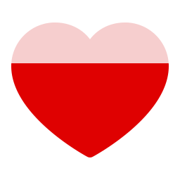
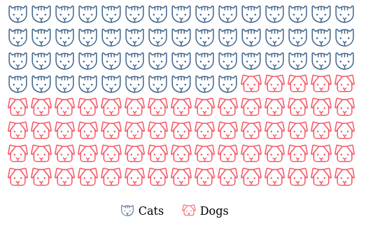

R wrapper for using Phosphor Icons in shiny applications or rmarkdown documents. Visit phosphoricons.com for a list of all available icons.
Installation
Install from CRAN with:
install.packages("phosphoricons")You can install development version from GitHub with:
remotes::install_github("dreamRs/phosphoricons")Icons usage
Create an icon with ph() function:
library(phosphoricons)
ph("lightning")There’s 5 weights available:
ph("lightning", weight = "thin")
ph("lightning", weight = "light")
ph("lightning", weight = "regular")
ph("lightning", weight = "bold")
ph("lightning", weight = "fill")Colorize icon using fill argument:
ph("lightning", weight = "bold", fill = "gold")There’s two type of icons:
There’s a big debate between Web Fonts vs SVG for icons, but mainly:
- Web fonts require an
htmlDependencythat include all icons even if you use one, it will increase the size of your document in self contained mode. - SVG icons won’t currently work with some shiny functions with an
iconargument.
Bonus
Fill icon according to percentage:
ph_fill(
ph("heart", weight = "fill", height = 128),
colors = c("#DF0101", "#F6CECE"),
breaks = 0.7
)
ph_fill(
ph("star", weight = "fill", height = 128, stroke = "gold", `stroke-width` = 10),
colors = c("gold", "#FFF"),
breaks = 0.5,
orientation = "h"
)Icon waffle:
waffle_icon(
values = sample(c("Cats", "Dogs"), 200, TRUE),
colors = list(
Cats = "#456990",
Dogs = "#F45B69"
),
icons = list(
Cats = ph("cat", height = NULL),
Dogs = ph("dog", height = NULL)
),
ncol = 15,
nrow = 8,
width = "500px"
)